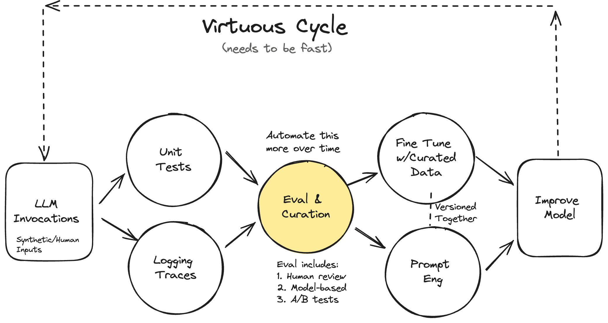

3 The #1 Mistake Companies Make with AI
One of the first questions I ask tech leaders is how they plan to improve AI reliability, performance, or user satisfaction. If the answer is “We just bought XYZ tool for that, so we’re good,” I know they’re headed for trouble. Focusing on tools over processes is a red flag, and the biggest mistake I see executives make when it comes to AI.
Improvement Requires Process
Assuming that buying a tool will solve your AI problems is like joining a gym but not actually going. You’re not going to see improvement by just throwing money at the problem. Tools are only the first step. The real work comes after. For example, the metrics that come built-in to many tools rarely correlate with what you actually care about. Instead, you need to design metrics that are specific to your business, along with tests to evaluate your AI’s performance.
The data you get from these tests should also be reviewed regularly to make sure you’re on track. No matter what area of AI you’re working on– model evaluation, RAG, or prompting strategies– the process is what matters most. Of course, there’s more to making improvements than just relying on tools and metrics. You also need to develop and follow processes.
Rechat’s Success Story
Rechat is a great example of how focusing on processes can lead to real improvements. The company decided to build an AI agent for Real Estate agents to help with a large variety of tasks related to the different aspects of the job. However, they were struggling with consistency. When the agent worked, it was great, but when it didn’t, it was a disaster. The team would make a change to address a failure mode in one place, but end up causing issues in other areas. They were stuck in a cycle of whack-a-mole. They didn’t have visibility into their AI’s performance beyond “vibe checks” and their prompts were becoming increasingly unwieldy.
When I came in to help, the first thing I did was apply a systematic approach that is illustrated here:

This is a virtuous cycle for systematically improving LLMs. The key insight is that you need both quantitative and qualitative feedback loops that are FAST. You start with LLM invocations (both synthetic and human-generated), then simultaneously:
- Run unit tests to catch regressions and verify expected behaviors
- Collect detailed logging traces to understand model behavior
These feed into evaluation and curation (which needs to be increasingly automated over time). The eval process combines:
- Human review
- Model-based evaluation
- A/B testing
The results then inform two parallel streams:
- Fine-tuning with carefully curated data
- Prompt engineering improvements
These both feed into model improvements, which starts the cycle again. The dashed line around the edge emphasizes this as a continuous, iterative process - you keep cycling through faster and faster to drive continuous improvement. By focusing on the processes outlined in this diagram, Rechat was able to reduce its error rate by over 50% without investing in new tools!
Check out this ~15-minute video on how we implemented this process-first approach at Rechat.
Avoid The Red Flags 🚩
Instead of asking which tools you should invest in, you should be asking your team:
- What are our failure rates for different features or use cases?
- What categories of errors are we seeing?
- Does the AI have the proper context to help users? How is this being measured?
- What is the impact of recent changes to the AI?
The answers to each of these questions should involve appropriate metrics, and a systematic process for measuring, reviewing, and improving them. If your team struggles to answer these questions with data and metrics , you are in danger of going off the rails!
Avoiding Jargon Is Critical
We’ve talked about why focusing on processes is better than just buying tools. But there’s one more thing that’s just as important: how we talk about AI. Using the wrong words can hide real problems and slow down progress. To focus on processes, we need to use clear language and ask good questions. That’s why we provide an AI Communication Cheat Sheet for Executives This guide helps you:
- Understand what AI can and can’t do
- Ask questions that lead to real improvements
- Ensure that everyone on your team can participate
Using this cheat sheet will help you talk about processes, not just tools. It’s not about knowing every tech word. It’s about asking the right questions to understand how well your AI is working and how to make it better. In the next chapter, we’ll share a counterintuitive approach to AI strategy that can save you time and resources in the long run.